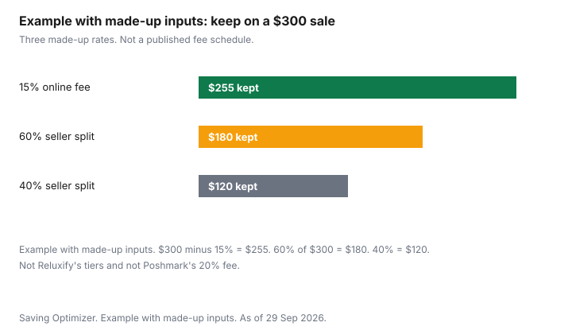

Clothing · Canada
Consignment Shopping in Canada: Buying and Selling Designer and Quality Clothing
Selling designer clothing on consignment in Canada means signing a contract that sets the split, the holding period and the fees. For example, Reluxify pays sellers 60 to 90 percent depending on the sale price, and Poshmark Canada charges C$3.95 under C$20 or 20 percent above. Designer consignment is a contract, not a vibe. The store or the site holds the piece, authenticates it or says it does, sets or agrees a price, and pays you after a sale minus a split that should be in writing before you hand anything over. Buyers have the mirror problem: a label, a dust bag, and a confident caption are not the same thing as authentication. This page uses two Canadian seller pages that print terms, plus Poshmark Canada's fee, and it labels every other percent as made up. Selling everyday clothes is selling clothes online. Kids' bins are selling kids' clothes. Counterfeit checks for beauty and for workout gear, which travel well to a logo, are beauty dupes and counterfeits and activewear specs. Education only. Not legal, tax, or authentication advice.
Key takeaways
- Reluxify's commission guide, as of 29 Sep 2026: you keep 60 percent up to a $500 seller sale price, 70 percent from $501 to $1,500, 80 percent from $1,501 to $5,000, and 90 percent at $5,001 and above. Its own example: a $2,000 sale pays you $1,600.
- Reluxify: payout initiated within 48 hours of a completed sale, 90-day minimum, $150 fee per item if you want it back before 90 days, $300 counterfeit return fee if a second review confirms a fake and you want it back. Standard authentication is inside the commission.
- Jadore Couture's consignment agreement: 90 days, or a $100 fee per item taken back earlier. Payment by e-transfer or bank transfer within 7 business days of a sale. A $250 fee if an item is not authentic and you want it back. The agreement points at a commission table and does not print the percentages.
- Poshmark Canada: C$3.95 under C$20, otherwise 20 percent of the listing price. You set the listing price. The buyer is not a consignment client waiting on a shop.
- Example with made-up inputs, and not those published rates: on a $300 sale, a made-up 60 percent seller split keeps $180, a made-up 40 percent split keeps $120, and a made-up 15 percent online fee leaves $255.
How consignment splits work
A split is your share of the price the buyer pays, after the house commission, and only after the sale. It is not a percent of what you paid years ago, and it is not a cheque on the day you drop the piece off.
Read four lines before you consign: the percent or the tier, the consignment period, what a price drop does to your payout, and what happens to an unsold item. If any line is missing, you do not have a contract yet. You have a conversation.
Reluxify publishes the tiers on its commission guide. The rate follows the final seller sale price. Up to $500, you earn 60 percent and Reluxify's commission is 40 percent. From $501 to $1,500, you earn 70 percent. From $1,501 to $5,000, you earn 80 percent. At $5,001 and above, you earn 90 percent. The guide's worked example is a $2,000 seller sale price, an 80 percent rate, a $1,600 payout, and a $400 commission. That example is Reluxify's own. The seller sale price is the price after a scheduled markdown or an approved price adjustment, and before a separate promotion Reluxify funds. If Reluxify discounts the buyer out of its own margin, the guide says your payout does not change. A scheduled markdown does change the seller sale price, and it can move you into a lower tier. The markdown schedule is supposed to be in the agreement before you ship. Taxes charged to the buyer do not reduce your earnings, on that guide. You still have to decide whether the payment creates a personal tax obligation. Reluxify says that in one line and does not decide it for you. Confirm with the CRA. Not tax advice.
Jadore Couture's consignment agreement, as of the same date, says you leave the item for a minimum of 90 days or pay a $100 listing fee for each item taken back sooner. The house handles promotion, pricing evaluation, photography, the listing, and shipping to the buyer. You pay shipping if you cannot drop off or pick up. Payment is by e-transfer or bank transfer within 7 business days of a sale, unless you agree otherwise. Your share is the purchase price less the commission in Table A. The agreement text on that page does not print Table A's percentages. Ask for Table A before you consign. Do not fill the blank with Reluxify's tiers or with a number from a forum. The two businesses are not the same contract.
| Term | Reluxify | Jadore Couture |
|---|---|---|
| Split | 60 percent to you up to $500. 70 percent from $501 to $1,500. 80 percent from $1,501 to $5,000. 90 percent from $5,001. Rate follows the final seller sale price. | Purchase price less the commission in Table A. The percentages are not printed on the agreement page. Ask for Table A. |
| Consignment period | 90 days from the date Reluxify receives the item. After that, an unsold item can come back without the early fee. Return shipping is yours. | Minimum 90 days, or a $100 listing fee for each item taken back earlier. |
| Price drops | A scheduled markdown changes the seller sale price and can change your payout and your tier. A promotion Reluxify funds does not cut your payout. Markdowns beyond the agreement need your approval. | The agreement says the house will not sell below the price set with you unless you agree otherwise. |
| Unsold items | You may ask for them back after 90 days, and you pay return shipping. Before 90 days, a $150 fee per item. | You may ask for them back. Before 90 days, the $100 fee per item applies. |
| Authentication | Included in the commission. A second independent review within 7 calendar days. If a fake is confirmed and you want it returned, a $300 fee. Not charged only because a result is inconclusive. | In-house, and they may use a third party. The page says authentication can take 1 to 2 business days. If the item is not authentic, a $250 fee to return it, or the item will be destroyed. A further $250 per item is named if you want a counterfeit or imitation product sent back. |
| When you are paid | Payout initiated within 48 hours after a completed sale. Bank timing after that can vary. | E-transfer or bank transfer within 7 business days of the sale, unless agreed otherwise. |
Authenticity checks
Sellers confirm, in both of those agreements, that the goods are not stolen and not counterfeit. Reluxify's fee for a confirmed counterfeit you want returned is $300.
Jadore's page names $250 if the item comes back as not authentic, and says the item may be destroyed instead. Those fees are a reason to know your own closet before you book a pickup. A gift you cannot trace is a weak consignment. So is a logo piece bought from a seller who would not show the hardware.
Buyers should not stop at the shop's word. Ask what authentication was done, whether you can see it in writing, and what the return rule is if you believe the piece is not genuine. This guide does not cite a buyer return window for Reluxify or for Jadore Couture. Check the listing and the receipt. Look at the label, the stitch line, the hardware, the serial if the brand uses one, and whether the dust bag and the box match the piece or merely accompany it. The beauty and activewear guides show how a look-alike is a different problem from a counterfeit that copies a trademark. A dupe that admits what it is can be a cheaper garment. A counterfeit sold as the brand is the failure the consignment fees above are trying to catch. Neither this page nor a dust bag can certify a bag. If the money is large, the written authentication and the return policy are the documents that matter.
| Check | What you are looking for |
|---|---|
| Labels | Fibre content and dealer identity where the textile rules require them, plus a brand label that matches the hardware and the style code. A loose label is a question, not a verdict. |
| Construction | Stitch evenness, lining, zipper tape, and wear in the places a real owner would wear out. Condition grades on Jadore's page run from A+ (unused or minimal use, with packaging) down to C+ (heavy wear). Ask which grade you are paying for. |
| Authentication claims | Who checked it, whether a written result exists, and what you pay if you are wrong. Reluxify includes authentication in the commission. That sentence is about the seller's fee. It is not a warranty this guide can extend to you as a buyer. |
| Return policy | The window, who pays return shipping, and whether "final sale" is printed. If the page does not say, ask before you pay. This guide does not fill that blank. |
Pricing expectations
Expect a resale price below what the piece cost new, and expect the house to take the tier you signed. Reluxify says its quote, before you ship, includes an estimated selling-price range and an estimated payout range, and that a physical inspection can change the quote.
If the inspection would change the terms materially, the guide says they send revised terms for your approval before listing. Your first number is not locked until you accept the revised one. Jadore's agreement says the house evaluates condition and will not take less than the agreed price unless you agree. Condition is doing a lot of work in both sentences. A stain you did not photograph becomes their argument for a lower price. Photograph it first.
Poshmark is not consignment. You choose the listing price, and the Get Started guide's fee comes off that price: C$3.95 under C$20, or 20 percent of the listing price at C$20 or more, and you keep 80 percent on that second band. You are paid when the order completes, and you can withdraw for free to a checking account. Nobody is holding the dress for 90 days unless you simply fail to sell it. The trade-off is that you do the photography, the shipping drop, and the questions. Use the online selling guide if you want the platform comparison. Do not subtract a US site's commission from a Canadian price and call it the same deal. A fee in US dollars on a US site is not a Canadian term.
Seasonal intake windows
Neither Reluxify's commission guide nor Jadore's agreement prints a calendar that says coats in August and dresses in March. What they print is a holding period: 90 days.
That is how long your item is committed, not which week the shop wants wool. A storefront consignment shop in your city may still refuse off-season stock because the rack is finite. Ask what they are taking this month, and ask again before you drive over with a suitcase. The 90 days then tells you when you can have an unsold piece back without the early fee each contract names.
Price drops often arrive inside that window, not on a public holiday. Reluxify's markdown is scheduled in the agreement and can cut the seller sale price. If you will not accept a lower tier, say so before you ship, while the agreement still lets you. Waiting until day 80 is how a piece you wanted returned has already been marked down. Jadore's text says they will not go below the set price unless you agree. Hold them to the sentence you signed, and keep a copy.
Online consignment options
The Canadian online option with a full commission table on the pages as of 29 Sep 2026 is Reluxify. The tiers, the $2,000 example, the 48-hour payout start, the 90 days, and the two fees are above.
Inbound shipping is described as a prepaid label where Reluxify provides one, with responsibility after the carrier's first acceptance scan if you followed the packing instructions. Keep the carrier receipt until they confirm arrival. The coverage amount is in the agreement, not in a number this guide will guess.
Poshmark Canada is the online resale option with a published fee, and it is not a consignment split. Under C$20 you lose C$3.95. At C$20 or more you lose 20 percent of the listing price. You keep the rest of that formula, before any label upgrade the shipping guide might add. The Get Started page describes a prepaid label and a drop at the post office or a mailbox if the parcel fits. Compare a $300 dress only with figures you label honestly. Example with made-up inputs, drawn so they are not Reluxify's tiers and not Poshmark's 20 percent: a $300 sale at a made-up 60 percent seller split pays $180, a made-up 40 percent seller split pays $120, and a made-up 15 percent online fee leaves $255. The chart uses those three. Reluxify's real $2,000 example stays in the table above, where a reader can see it is the company's arithmetic. If you want the real Poshmark keep on $300, that is a separate line: 20 percent of $300 is $60, so $240 remains, using the published percent and a made-up listing price. Do not mix that $240 into the chart and pretend the chart's 15 percent is Poshmark.

Sources
- Reluxify, commission guide, reluxify.ca/pages/commission-guide, as of 29 Sep 2026. Tiers, the $2,000 example, promotions versus markdowns, 48-hour payout, 90 days, the $150 early fee, $300 counterfeit return fee, authentication included.
- Jadore Couture, consignment agreement, jadorecouture.ca/pages/consignment-agreement, as of 29 Sep 2026. 90 days or $100, 7 business days, $250 authentication fee language, condition grades A+ through C+. Table A percentages are not on that page.
- Poshmark Canada, Get Started, poshmark.ca/posh_guide/get_started_on_poshmark, and the sell page poshmark.ca/sell, as of 29 Sep 2026. C$3.95 under C$20. 20 percent of the listing price at C$20 or more.
Frequently asked questions
How does designer consignment work in Canada?
You leave the piece under a written split, a holding period, and rules for price drops and unsold items. Reluxify publishes tiers from 60 percent to 90 percent of the seller sale price and a 90-day minimum. Jadore Couture's agreement uses 90 days and points at a commission table the page does not print. Read the contract in front of you. One shop is not the other.
What split do consignment stores take?
Reluxify's guide: you keep 60 percent up to $500, 70 percent from $501 to $1,500, 80 percent from $1,501 to $5,000, and 90 percent from $5,001. Its example of a $2,000 sale is a $1,600 payout. Jadore's agreement refers to Table A and does not print the percentages on that page. There is no single Canadian split. Ask before you consign.
How do I know an item is authentic?
Ask who checked it and whether the result is in writing. Look at labels, stitches, hardware, and wear in the places an owner would wear a piece out. Reluxify includes authentication in the seller's commission and names a $300 fee if a confirmed fake is sent back. Jadore names $250 if an item is not authentic. Neither fee certifies the piece you are buying.
Can I return a consignment purchase?
Only on the terms the store prints for buyers. The seller agreements cited here do not state a buyer return window. Ask before you pay, and keep the receipt. A final-sale line means what it says. This page cannot create a return the shop does not offer.
Is online resale better than a consignment store?
It is a different contract. Poshmark Canada takes C$3.95 under C$20 and 20 percent of the listing price otherwise, and you do the listing and the drop-off. Reluxify holds the piece and pays a tier after a sale. Example with made-up inputs: on $300, a 15 percent fee leaves $255 and a 60 percent split leaves $180. Those rates are made up. Use the published fee for the channel you will actually use.
Researched and drafted with AI assistance and fact-checked against official Canadian sources. How we create content.